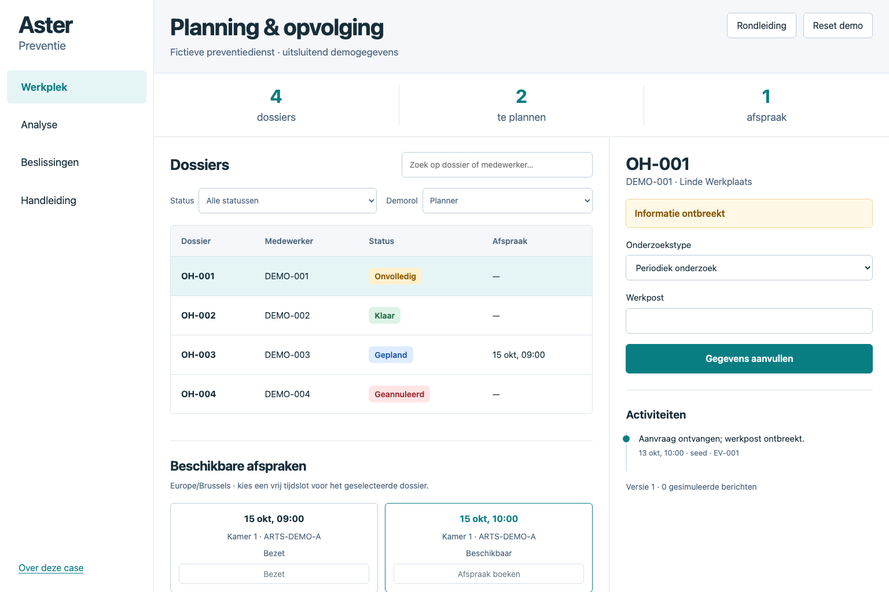

Eerst volledig, dan reserveren
Een onvolledig dossier blijft zichtbaar, maar bezet geen capaciteit. Een voorlopige reservering vraagt extra verval- en herstelbeleid.
ADR-01 en alternatiefSoftware analysis case · Philippe Godfroy
Een fictieve preventiedienst. Eén administratieve module. Volg de klantvraag tot de procesregel, de werkende interactie en de acceptatietest.
Fictieve organisatie · uitsluitend demogegevens · geen medische dossiers

Het probleem
Aanvragen missen gegevens. Twee planners bieden dezelfde arts aan. Na een annulering blijft de oude plek bezet. De fictieve case onderzoekt eerst die werkwijze en maakt daarna expliciete regels voor volledigheid, reservering en herplanning.
De analysejourney
Een onvolledig dossier blijft zichtbaar, maar bezet geen capaciteit. Een voorlopige reservering vraagt extra verval- en herstelbeleid.
ADR-01 en alternatiefEen nieuwe slot-ID mag dezelfde arts, kamer of medewerker niet dubbel boeken. Aansluitende tijdslots mogen wel.
ADR-02 en productierisicoAnnuleren geeft de oude plek vrij. Heropenen reserveert niets; de planner kiest daarna expliciet een passende nieuwe datum.
ADR-03 en uitzonderingenEén eis helemaal doorgetrokken
P-03 → FR-04 → R-04 → AC-15 → K-04
De specificatie bepaalt de status en vrijgave. De gedeelde domeinfunctie voert de regel uit. De test annuleert OH-003 en boekt daarna OH-002 op dezelfde plek. Het meetplan controleert vrijgave na commit.
Volg het bewijs in de repoDomeintests toetsen de regels. Browserchecks volgen de volledige klikflow op desktop en mobiel. UAT, migratie, pilot en support zijn als overdrachtsstukken uitgewerkt.
Echte login, databaseconcurrency, beschermde auditopslag en berichtaflevering zijn productievoorwaarden. KPI-getallen zijn illustratieve aannames voor een meetplan, geen behaalde resultaten.
Bekijk validatie en beperkingen